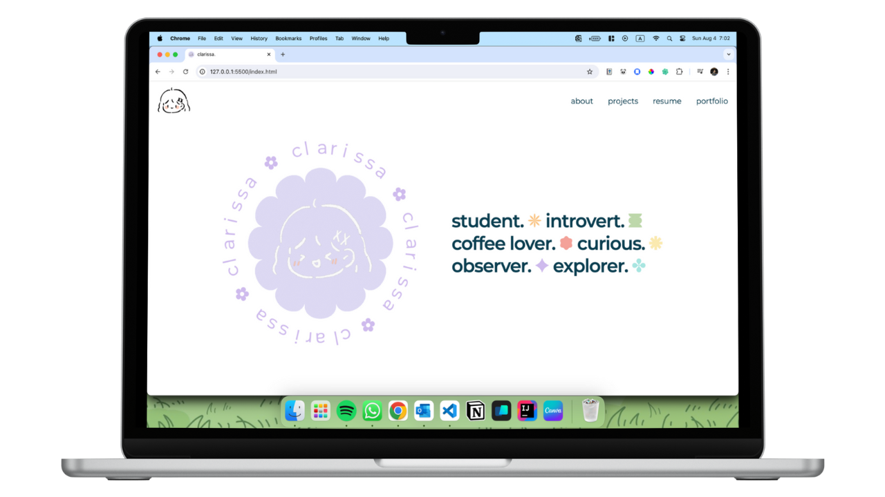
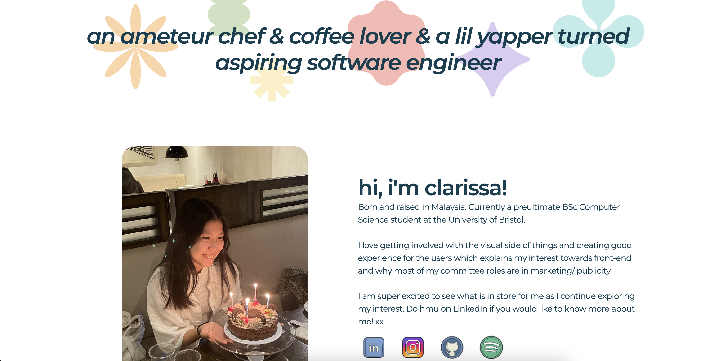
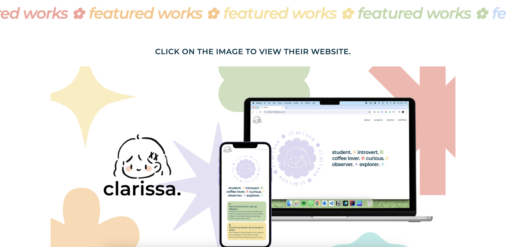

In an effort to create a more engaging and visually appealing online presence, I undertook a project to rebrand my personal website portfolio during my free time. The goal was to transform the existing website, which I found to be less interesting, into a dynamic and compelling showcase of my work and skills. The project allowed me to experiment with new design ideas and improve my proficiency in web development technologies such as HTML, CSS, and JavaScript.
Ongoing; From 25 Jul 2024
HTML, CSS, JavaScript, jQuery
Visual Studio Code, Adobe Illustrator, Git

The main pain points were the lack of contents and design choices made does not reflect on the personal brand that I've envisioned.
As I try to go through the current webpage, I noted that the design choices made are leaning towards minimalistic and straightforward to allow the people to digest information easily. With that in mind, I looked into the areas of improvement with the existing flow that I could potentially build upon.

The homepage is the first thing that the user sees when they visit the website. It should be engaging and visually appealing to capture the user's attention.
The current homepage is too plain and lacks visual interest.
There's too many font combination (Inconsistent, and might look a bit messy from the viewer prespective).

The content shown is too wordy and looks messy.
Experince section does not showcase what I've done and it's too simplified (e.g, no projects examples).
Extra (fun facts) section can be shown in a more interesting way.

The content shown is not properly arranged.
Skill level might not be necessary.

Too many font combination in a section which could be presented as messy.
The arrangement of the content can be improved.
I wanted to explore alternatives to improve content structure and layout. I started by sketching out different ideas and wireframes to visualize the new website layout.
Here are the points that I've decided on to create a more engaging and visually appealing design.
Clean and minimal themed webpage.
Placing information in Bento Box design.
Pastle rainbow with minimalistic design elements, doodles, and shapes.
I have broke down huge chunks of information from the previous about section into two pages (One part is in homepage, and another is in the about page).
I've added a new section to feature my projects to showcase my skills.


Improved from the previous design to provide better clarity to guide the users on ways to contact (Work together/ Contact Section) and navigate through the webiste (Footer).

Improved design from the previous skills section to grouped sections in the form of bento box design.
The top section includes a picture and paragraph of myself and some of my social links.

The redesign of the homepage includes the hand drawn logo, shapes and circluar animation. These designs intents to attract the attention of the user and keep the webpage interesting.


The new section features the top 3 works that has been done. The Learn More button leads to the innerpages of each project, which explains the process of creating the pages.
The clickable image of each project leads to the project webpage (Opens in a new tab).
The redesign of the CTA is simplified and text is reduced from the previous design to make it easy for the user to read through and digest. The footer contains 3 parts: social links, navigation links and copyright.


The About page is split into 2 parts: breif introduction and skills & more section. The arrangement of the contents are arranged in bento box design (top section has 3 containers and bottom section has 4 containers).
This arrangement is designed to be effortlessly scannable and digest.